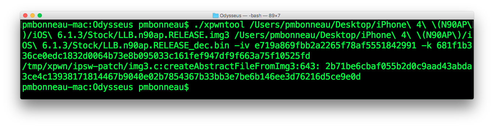
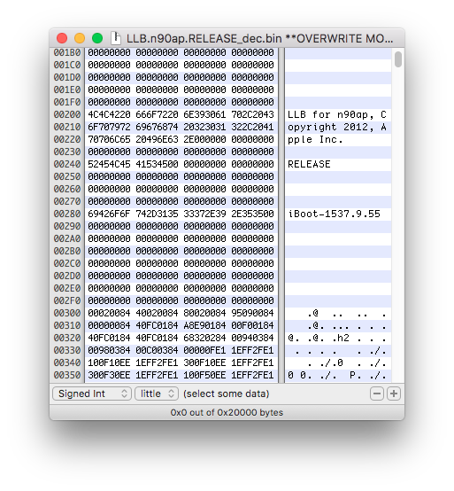
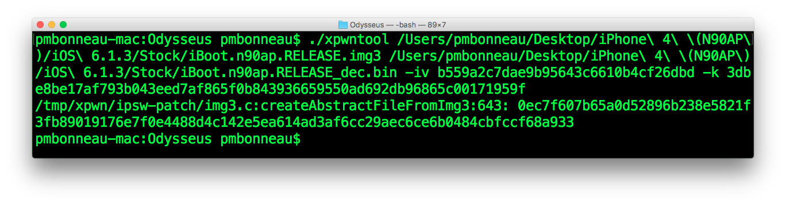
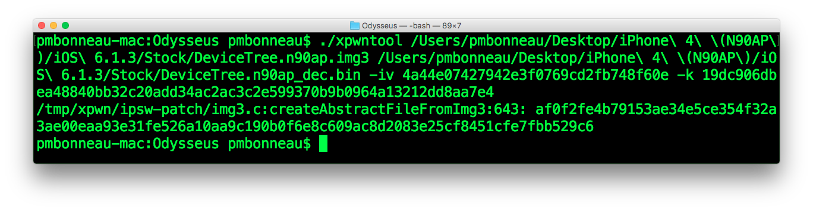
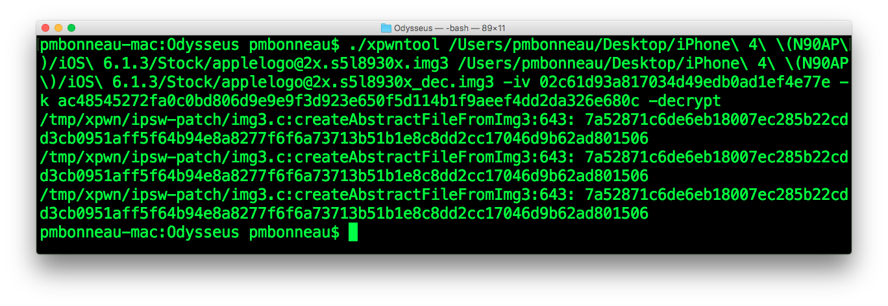
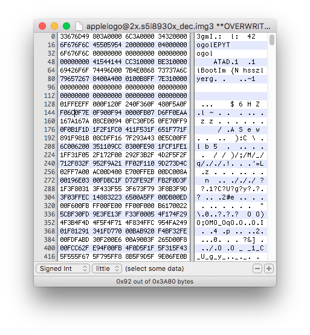
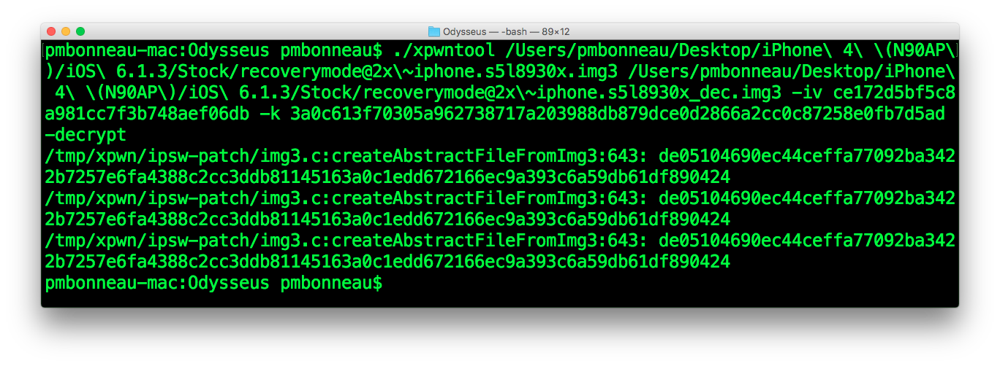
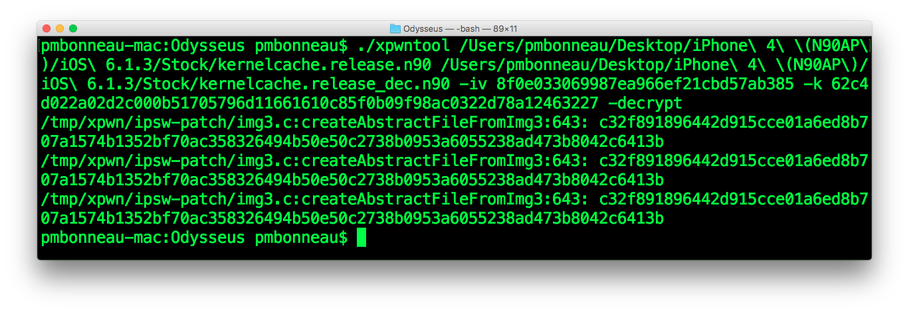
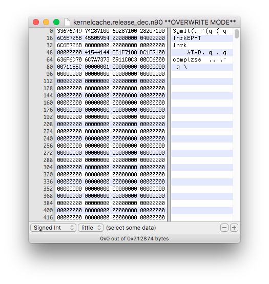
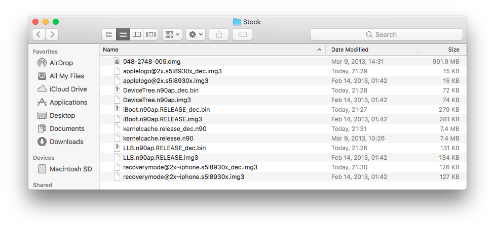

Decrypt firmware images
Download Odysseus v0.999 from https://dayt0n.github.io/odysseus/odysseus-0.999.zip, check SHA1 for integrity then extract the .zip to get xpwntools. To use Apple's iOS low-level firmware image from a kloader boot, we must have decrypted files. In order to get decrypted images, use decryption keys from TheiPhoneWiki. Select your device, then the firmware you want to install as a secondary OS. Be careful to get keys from the right build number as your downloaded ipsw file.Use xpwntools to decrypt the firmware images. From a terminal, go to the "Stock" folder.
pmbonneau-mac#xpwntool [encrypted .img3 file] [decrypted output .img3 file] -iv [IV] -k [KEY] -decrypt
The decrypt flag is very important, because it keeps the .img3 container. If this flag is not used, you will end up with the data portion only (necessary for disassembly).
Use the previous command to decrypt the following .img3 files from the "Stock" folder.
LLB.[...].img3
iBoot.[...].img3
DeviceTree.[...].img3
applelogo.[...].img3
recoverymode.[...].img3
kernelcache.release.[Device ID]
Example using iPhone 4 (iPhone3,1 - N90AP) iOS 6.1.3 (10B329) images.
LLB :
pmbonneau-mac#xpwntool LLB.n90ap.RELEASE.img3 LLB.n90ap.RELEASE_dec.img3 -iv e719a869fbb2a2265f78af5551842991 -k 681f1b336ce0edc1832d0064b73e8b095033c161fef947df9f663a75f10525fd –decrypt
 Open the decrypted image in a hex editor. If you see the string "LLB for...", LLB image is properly decrypted. iBoot :
pmbonneau-mac#xpwntool iBoot.n90ap.RELEASE.img3 iBoot.n90ap.RELEASE_dec.img3 -iv b559a2c7dae9b95643c6610b4cf26dbd -k 3dbe8be17af793b043eed7af865f0b843936659550ad692db96865c00171959f -decrypt
 Open the decrypted image in a hex editor. If you see the string "iBoot for...", iBoot image is properly decrypted.DeviceTree :
pmbonneau-mac#xpwntool DeviceTree.n90ap.img3 DeviceTree.n90ap_dec.img3 -iv 4a44e07427942e3f0769cd2fb748f60e -k 19dc906dbea48840bb32c20add34ac2ac3c2e599370b9b0964a13212dd8aa7e4 –decrypt
 Open the decrypted image in a hex editor. If you see some redeable strings such as model number (ex. N90AP), DeviceTree image is properly decrypted.
Boot logo :
pmbonneau-mac#xpwntool applelogo@2x.s5l8930x.img3 applelogo@2x.s5l8930x_dec.img3 -iv 02c61d93a817034d49edb0ad1ef4e77e -k ac48545272fa0c0bd806d9e9e9f3d923e650f5d114b1f9aeef4dd2da326e680c –decrypt
 Open the decrypted image in a hex editor. If you see "iBootIm" at the beginning of the hex view, logo image is properly decrypted. Recovery Mode logo :
pmbonneau-mac#xpwntool recoverymode@2x~iphone.s5l8930x.img3 recoverymode@2x~iphone.s5l8930x_dec.img3 -iv ce172d5bf5c8a981cc7f3b748aef06db -k 3a0c613f70305a962738717a203988db879dce0d2866a2cc0c87258e0fb7d5ad –decrypt
 Open the decrypted image in a hex editor. If you see "iBootIm" at the beginning of the hex view, logo image is properly decrypted.Kernelcache :
pmbonneau-mac#xpwntool kernelcache.release.n90 kernelcache.release.n90_dec -iv 8f0e033069987ea966ef21cbd57ab385 -k 62c4d022a02d2c000b51705796d11661610c85f0b09f98ac0322d78a12463227 –decrypt
 Open the decrypted image in a hex editor. If you see "complzss" at the beginning of the hex view, kernelcache image is properly decrypted.  The "Stock" folder content should looks like the one of this screenshot.